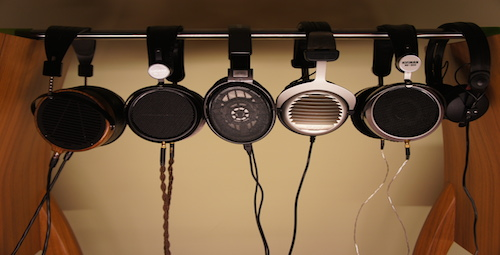
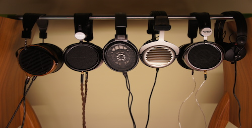
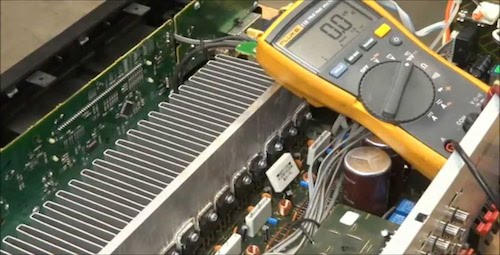
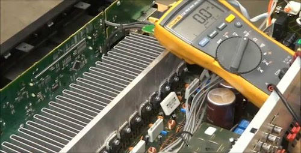
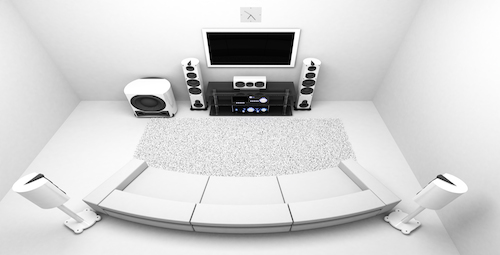
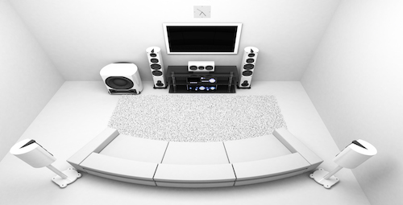

Product Details
Consultation:
Hearing Test: If requested, our highly sepcialized team will conduct professionally approved hearing tests to determine which equipment would best suit you given your personal preference and based on how much of the frequency range of 20hz-20khz you can hear.
General Advice: Much of the audio world is overwhelming. Our customer service team will offer an in-depth 1-on-1 Q&A session to discuss any issues, or concerns you may have. We are here to chat if you want to develop an understanding of audio components.
Upgrade Path: Getting into the hobby of enjoying good sound can be a slippery slope that can break the bank in a flash. If you are just getting started, or have an intermediate understanding of audio equipment, our team will provide a consise upgrade path with a detailed analysis based on your budget, preference and needs.
 

Repairs:
Ruptured Drivers: Speaker drivers can get ruptured, either from prolonged listening at high volumes, physicial wear and tear. Ruptured drivers are a serious issue, but can be repaired by our expert, technical team.
Loose Wiring: Loose wiring can happen in speaker set-ups, as well as in headphones. In order to avoid further damage, you might not want to start your first soldering experience on a pair of $600 headphones. Our team has a steady hand and the knowledge to micro-solder which will cover any problems you are experiencing.
Other Electrical Repairs: Our team also fixes many other components in audio, such as DACs and amps
 

Installation:
Subwoofer Placement: Having a subwoofer is optional if your set-up is entirely for music, or it might not be possible to place in your set-up given the space. However, if you have a subwoofer in your set-up, placement is key to ensure the bass isn't overwhelming and isn't underpresented. Our team will conduct measurements to mathematically determine the optiminal subwoofer placement for your system.
Reinforce Floors: This is only for the serious enthusiasts. If you are looking at speakers in the range of $100,000 or subwoofers at around $5,000 tend to be incredibly heavy, so reinforcing floors is a must.
Surround sound set-up: Whether you have a projector, flat panel TV in a surround sound set up. The height of the left and right channel speaker is essential. The placement of surround-left and -right channel is important and is often is placed in a position that plays too loud.
 
